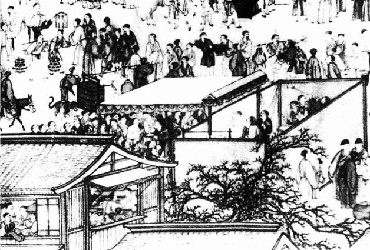
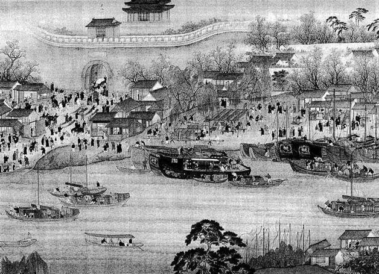

十
鲁迅说：“悲剧将人生的有价值的东西毁灭给人看，喜剧将那无价值的撕破给人看。”[56]我曾不解，为何崇祯殉国之后明朝不即亡，却非在南京再来上这么一出？直到某日忽念及鲁迅这句话，才仿佛得了满意的答案。
起码从在土木堡被蒙古人可笑地捉去的英宗朱祁镇开始，明朝历史已开始喜剧化历程，且这趋向再不曾改变过。它配不上悲剧式的结束；由崇祯皇帝壮烈殉国画上句号，并不符合明朝最后一个多世纪的气质。历史老人目光如炬，思维缜密，不允许自己的书写出现这种败笔。南京浮现，朱由崧登场，表面看明祚再续一年，实则是历史老人要为它重新安排结尾——一种与其神韵更加迹近的结尾。
提笔之前，我默默咀嚼和消化纷纭史料的诸般细节及意味，两个字眼油然而生：“曲终”、“筵散”。
曲者，戏剧在中国古代的别名。元代的剧作集称《元曲选》，明代雅正剧种称“昆曲”，唱戏称“拍曲”。筵，本为席地之坐垫（中古以前中国无椅），后多与纵娱、宴飨诸义连。曹植《斗鸡》：“长筵坐戏客，斗鸡观闲房。”[57]《红楼梦》：“千里搭长棚，没有个不散的筵席。”[58]一个筵字，在我们这里，可为戏台下的看席，可为宴饮销醉之所。
读史时，曾有三句话让我印象深刻，而摘入笔记。
一句出自朱由崧。乙酉年正月初一，元旦，这天发生了日食：

明代市井皮影演出。
繁华街区皮影演出现场，场所是固定的，观众棚里挤满了四五排人，还有不少在棚外伸头探脑。戏剧，以其摹仿性再现，将原本在时间中流逝的生活，重新推到眼前。这种迷人特质，足以颠倒众生，无论闾巷小民，还是士夫文人，乃至皇帝本人，都会在其中寻求安慰，把它作为现实的替代品。

南京通济门。
此门在南京诸城门中，以整体如巨轮之首的造型而称独特。乙酉年五月初十，公历1645年6月3日，夜半，明朝末代皇帝朱由崧由此“弃船”而逃，沿西南方奔马鞍山，十余天后被清军押回，也是从通济门入城。
明福王罢朝，设宴内殿；值天阴晦，意颇不怿，诸内臣竟下殿除窗槅（使殿内亮堂些）。福王曰：“不必，朕在此坐不久。”闻者皆骇其不祥。[59]
诸内竖惊骇于此语的不吉利，笔者则独于那个“坐”字回味不已。盖因朱由崧到了南京后，一切都离不开“坐”字。他每日的生活，大抵不出三件事：坐龙床为君；坐在台下看戏；与近倖辈“杂坐酣饮”。
一句是乙酉四月十九日，就拒北兵还是御左兵举行召对，马士英强行决定放弃江北之防、全力阻止左良玉，朱大典当场所言：
朱大典含怒入朝堂，曰：“少不得大家要做一个大散场了！”[60]
“大散场”！还有比这更生动的字眼么？其于明朝的收束，由形到神，丝丝入扣，至矣尽矣。
第三句见于孟森文《书樵史通俗演义》，他评论有关南京的一条史料说：
南都儿戏之局，形容尽致，要是作者身在事中，其言如此。[61]
“儿戏之局”，画出弘光朝一年之魂。能味此四字，即知这段历史真谛。
说起明代文化，戏剧既为一大成就，亦是它的一项代表。明代戏剧秉承元曲之盛，而又有更大发展。元时，戏剧虽巨匠如云，吸纳诸多一流才子，然而却有其不得已，是“九儒十丐”所致。明代不然。戏剧在明代，不单登了大雅之堂，擅长此道乃至是第一等的才藻，受到推许和钦羡。故而明代士大夫中，戏剧已是十足风雅的表征，大名士如康海、王世贞、汤显祖等都因戏文享誉士林。我们也曾提到，弘光朝关键人物之一阮大铖，便是戏剧方面的大家。他不但能创作，还建了最好的私人剧团，从演员、乐队、道具到导演，样样皆精，专供他演绎个人剧作。撇开政治不论，阮大铖确为明末剧坛顶尖人物，能将戏剧玩到他那程度的，后来只有李渔李笠翁。
再说一个现象。大家如对较具传统的戏曲（晚近剧种不算）感兴趣，可留意它们的服装。首先是京、昆两剧，余如秦腔、豫剧、汉剧、川剧等，其装束全部为明代式样，剧情可变，着装却一律不变，即便所演乃汉唐宋抑或清代故事、人物，所饰冠服却通通为明式。原因何在？就在于明代对中国戏剧史有着规范和定型的意义，至今，可追溯的舞台实践和表演范式，由明代所确立，之前元人如何演戏都已失其孑遗，如今只能在壁画上知道些静态的情形。
还要看见，戏剧在明代不只是艺术而已，它对明代文化、生活以及人的意识，渗入肌肤，堪比网络之于当下社会。李自成入北京之初，百官惧冠带惹祸，尽弃毁之；两天后，命众官投职名，必须着官服以见，怎么办呢？许多官员不约而同想到用戏服代替，纷至戏班争购，致一顶戏冠价陡至三四两银子。[62]虽说当时戏服款式取自本朝，算“现代装”，然而戏服究竟是戏服，跟现实着装还是有明显区别，可众官并不感觉有何心理障碍。体会这个细节，明人对戏剧浸淫之深，竟至不分戏内戏外，在生活与戏剧间，轻松跨越。
如上面例子不足以说明，再看发生在南京的两件事：
阮圆海誓师江上，衣素蟒，围碧玉，见者叱为梨园装束。钱谦益家妓为妻者柳隐，冠插雉羽，戎服骑入国门，如《明妃出塞》状，大兵大礼，皆娼优排演之场。欲国不亡，安可得哉！[63]
阮圆海即阮大铖，柳隐即柳如是。他们两个，都是在生活以至公务中，以近乎粉墨登场方式于大庭广众露面。
我们必须说，不但明代文化有很强的戏剧成分，明代的心理和政治也是充分戏剧化的。如果换换说法，通俗一些，则是：明代的不少事，不少人，往往有如演戏，扮演的意味很浓厚，完全是一种仿真存在。这在明武宗正德皇帝朱厚照那里，有最显著的表现。自打继位为君，朱厚照直到死，短短三十年的生涯都在设法逃离皇帝角色，抑或使自己与皇帝角色之间产生间离。他在宫中使自己变身为小商小贩，在宫外打造豹房那种淫邪空间来释放道德压力，以“大将军”身份历险和周游各地并严禁大臣指认、说破其真实身份……此人一生，是戏仿的一生，谐谑的一生，或干脆说是一部大型角色扮演类游戏。尽管他并非职业演员，可所作所为，比百老汇的表演家更加彻底；演员尚能区分自己的舞台和生活形象，朱厚照却不论何时何地都在从事演艺活动。他用表演对抗现实，用虚拟消解真实。整个明朝，不以皇帝为“角色”者稀。大多数皇帝，要么主动使“皇帝”变成一种角色，以便从中脱壳（如武宗、熹宗），要么在礼法和群臣约束下被迫角色化——岂止皇帝被角色化，群臣同样以扮演或假面方式出入朝堂，君臣间，每每心照不宣像串戏那样互动和周旋。嘉靖年间“大礼议”、万历年间“国本之争”以及崇祯皇帝的大结局，都有极强的表演性，以至演着演着“下不来台”。
梳理一番戏剧与明代的关系，就可以谈谈明朝紫禁城的末代皇帝了。
朱由崧，明代伟大戏剧文化熏陶出来的一位狂热戏迷，他对戏剧艺术的爱好，超过所有事情。明末祸乱，他痛失“锦衣纨裤之时，饫甘餍肥之日”，流浪飘零，遍尝辛酸，意外辗转南京、当了皇帝。回忆这一切，他所感到的最大收获，我以为是有缘纵情观赏中国最高水平的戏剧。专言声伎的《板桥杂记》一书，曾给晚明南京这样的形容：“金陵都会之地，南曲靡丽之乡。”[64]如许风尚，不必说福王的藩地洛阳，就是燕京古城，也远远望尘莫及。秦淮河畔，吹弹之盛、笙歌之精，比之现代百老汇、好莱坞未遑稍让。时人王阮亭《秦淮杂诗》有句：“旧院风流数顿杨，梨园往事泪沾裳”[65]，朱由崧的南京一年，大抵都在此句之中。孔尚任《桃花扇》，特以一折《选优》写朱由崧戏剧之癖，乃至他在剧中，与其说以皇帝身份毋如说实际仅以“戏迷”形象示人。虽然李香君被强迫入宫扮戏、朱由崧“寡人善于打鼓”[66]等情节，从史实角度未必果有，但“圣驾将到，选定脚色，就要串戏”[67]，以及阮大铖进优孟以结弘光欢心这类笔触，却千真万确，遍于诸史。
他真的是嗜戏如命。计六奇表弟胡鸿仪，曾叙其“亲所闻见者”：
故事，宫中有大变，则夜半钟鸣。一夕大内钟鸣，外廷闻之大骇，谓有非常。须臾，内监启门而出，索鬼面头子数十，欲演戏耳。[68]
甲申年最后一天，除夕日，朱由崧在宫中闷闷不乐，太监韩赞周问以何故：
弘光曰：“梨园殊少佳者。”赞周曰：“臣以陛下遇令节，或思皇考，或念先帝，乃作此想耶！”[69]
末日时分，朱由崧除了就御北兵、左兵事召对，以及就迁都试探阁臣外，其余记录全与演戏联系在一起。“丙戌，端阳节。福王在宫中演剧。”[70]“上不视朝，以串戏无暇也。”[71]民谣讽之“且听阮中曲变”，“阮”字双关，既指戏曲伴奏乐器又指阮大铖，戏班子是阮大铖提供的，而朱由崧溺于戏中，世事国事罔顾，对他来说，只能从“曲”中知“变”了。
最后，便是五月十日那一幕：“午刻，集梨园演剧”[72]，一直演到凌晨，跨马逃离南京。大戏迷朱由崧，好好过足最后一把戏瘾，无憾地告别了皇帝角色。
品咂、玩味一下明朝紫禁城这位末代皇帝的戏剧之恋以及心理，应不仅仅是艺术的沉迷。西方美学有“距离说”，认为艺术的价值在于与现实保持恰当距离，而非彼此重合。但我感到，朱由崧巨大、不可思议的戏剧瘾头，并不来自“距离感”，反而得之现实的暗示、刺激和诱发——他是因现实而痴迷戏剧。对于他，戏剧是一种现实的镜像，使他可以在“舞台小天地，人生大舞台”的奇妙置换中，跨越虚实，出入真假。人生如戏，戏即人生。他如此迷恋于看戏，这一行为和形象，非常令人惊异。我们根本没有理由排除这种可能——对于现实中南京所发生的种种，他投去的是同样的目光。
显然，在明王朝二百七十七年历史缓慢画上句号的过程中，朱由崧的视角极具代表性和时代性。如果连皇帝自己都以看客自居，肯定没有别人分不清戏内戏外。我们感到，通过这样的视角，在所有看客的冷淡注视或“围观”下，明朝两都之一的南京，已不再是一座实有之城，而变成一种景观或干脆说一道“布景”。当它摇摇而堕时，围观者没有感到天塌地陷，因为他们认为，倒掉的无非是某出戏的布景而已；这出戏已经演完，或者无法唱下去了。
“不过在戏台上罢了”[73]。这是鲁迅关于中国历史所讲的一句非常简单的话。